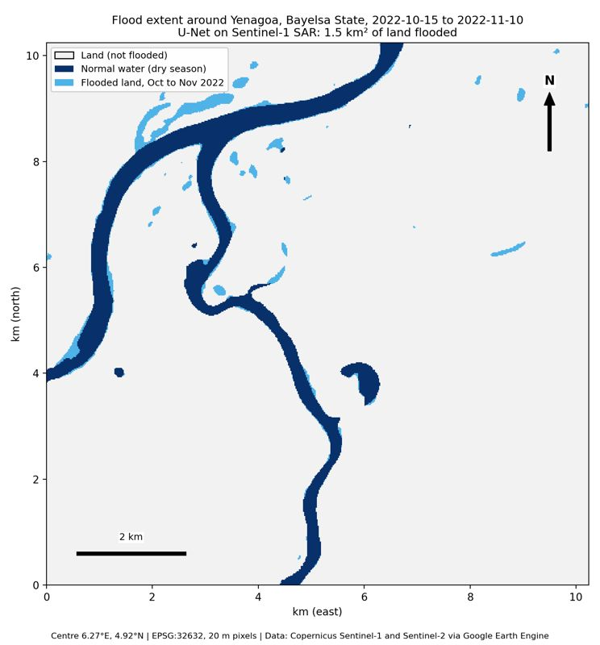

Sentinel-1 SARDeep learning (U-Net)Bayelsa
Mapping the 2022 Yenagoa flood with radar and a U-Net
Flood extent around Yenagoa (Oct to Nov 2022) from Sentinel-1 VV/VH using a fine-tuned U-Net and change detection, compared against a simple radar threshold, then checked against JRC surface water and WorldPop population.
0.95F1 score (U-Net)
0.83IoU vs JRC water
~1,675people in mapped flood water
The write-up explains honestly why the map misses flooding in built-up areas (radar double bounce, water under canopy, image timing).